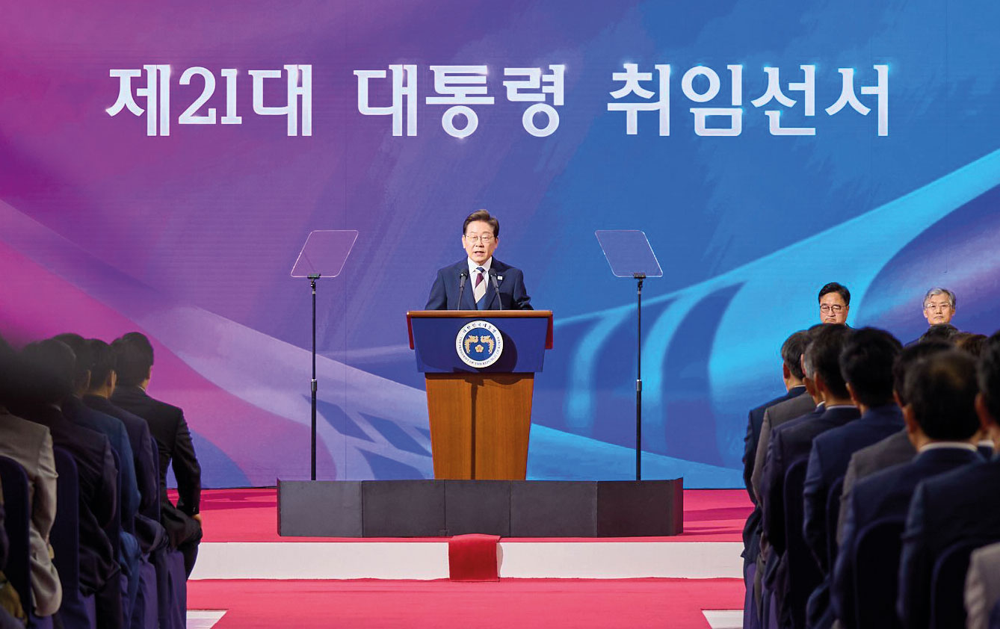

April
12th
Korean Stock Market Holds Up Despite U.S. Tariff Shock
As U.S. reciprocal tariffs rattled global markets, Korea’s stock market showed relative resilience—KOSPI fell by 2.0% while KOSDAQ rose by 3.4%. Contributing factors included a base effect from last year’s downturn, reduced political uncertainty, and strong earnings from Samsung Electronics. In particular, national pension funds played a key role in equity index stabilization by buying to meet target allocations during sharp downturns.

12th
Foreign Inflows Expected Despite Short Selling’s Return in 18 Months
Short selling resumed after a year and a half, causing both KOSPI and KOSDAQ to decline. However, expectations are rising for a rebound led by large-cap stocks and a recovery in foreign investor inflows. Historical patterns show that foreign trading volumes typically increase after short selling is reintroduced, and active participation from foreign funds is anticipated this time as well.
15th
S&P Affirms Korea’s Credit Rating at AA with Stable Outlook
Global credit rating agency S&P reaffirmed Korea’s sovereign credit rating at AA with a stable outlook, signaling continued confidence in the Korean economy. Despite political uncertainties and U.S. tariffs, Korea’s key indicators—such as GDP growth, fiscal soundness, and external balances—remain solid. S&P forecasts moderate growth over the next three to five years, though it identified potential liabilities related to North Korea as a key risk factor.

22nd
IMF Cuts Korea’s Growth Forecast to 1%—Most Major Economies Also Downgraded
In its April World Economic Outlook, the IMF lowered Korea’s growth projection by one percentage point to 1%, below estimates from the Korean government (1.8%) and the Bank of Korea (1.5%). The downgrade reflects trade tensions, policy uncertainties, and reduced investment due to high interest rates. The global growth forecast was also lowered to 2.8%, with most major economies—including the U.S., Europe, and China—seeing downward revisions. The IMF emphasized the importance of creating a stable trade environment, maintaining financial market stability, and implementing prudent policy measures.

May
5th
K-Defense Nears KRW 100 Trillion in Backlog Orders
Korea’s four major defense contractors are approaching a combined KRW 94.9 trillion in backlog orders, putting them on track to surpass the KRW 100 trillion milestone. The surge is driven by the ongoing Russia-Ukraine war, rising global defense budgets, and the fact that procurement systems are becoming less U.S.-centered. Korean firms are aggressively targeting Eastern European markets like Poland, offering fast delivery, customized packages, and strong price competitiveness. However, diversification of export destinations remains a key risk-mitigating challenge.
11th
Renewables Surpass 10% of Energy Mix for the First Time
For the first time in history, renewable energy accounted for more than 10% of South Korea’s power generation mix in 2024, signaling a watershed moment in the nation’s energy transition. Nuclear power also surpassed coal—which had been the country’s primary energy source—with a 31.7% share. This surge reflects the expansion of solar infrastructure and a continued focus on eco-friendly policies.
12th
OECD Forecasts Korea’s 2026 Potential Growth at 1.98%
The OECD has projected Korea’s potential growth rate for next year at 1.98%, falling below the 2% threshold for the first time. Domestic institutions such as the National Assembly Budget Office (1.9%) and KDI (1.5%) also forecast figures in the 1% range. Key factors include: the declining labor force due to low birth rates and aging, weakening total factor productivity, and slowing capital input.
17th
Consumer Sentiment Recovers to Levels Prior to the Martial Law Declaration
Korea’s Consumer Confidence Index (CCSI) jumped to 101.8 in May, the highest since October of last year. Optimism about economic stimulus from the new administration and easing political and external uncertainties contributed to the rebound. All sub-indices, including economic outlook, rose. The housing price outlook also climbed for the third consecutive month, reaching 111. Expected inflation edged down slightly due to stabilization in energy and food prices.
29th
Bank of Korea Slashes Growth Forecast to 0.8%, Cuts Rate to 2.50%
The Bank of Korea downgraded its 2025 growth forecast to 0.8% and cut the base interest rate to 2.50%. The sharp adjustment reflects the impact of U.S. tariffs and domestic demand slowdown, which have weighed heavily on exports, consumption, and construction investment. Although inflationary pressures have eased, allowing for a rate cut, risks from household debt, exchange rate volatility, and the widening U.S.-Korea interest rate gap remain concerning.
30th
Tariff Fallout Hits Production, Consumption, and Investment
April’s industrial production, consumption, and investment all declined, marking a return to a “triple minus” after three months. A 25% U.S. tariff hit the automotive sector, causing output to fall and Hyundai Motor’s Georgia Plant operations affected production in Korea. Retail sales, facility investment, and construction activity all showed continued weakness. While the government pointed to base effects and signs of consumer sentiment recovery as potential positives, the ongoing uncertainty surrounding U.S.-imposed tariffs remains a significant burden.
June
4th
Lee Jae-myung Elected 21st President of South Korea
Lee Jae-myung of the Democratic Party of Korea was elected as the 21st president with 49.42% of the vote. Held under extraordinary circumstances—following the imposition of martial law and the impeachment of former President Suk-yeol Yoon—the election saw a high turnout of 79.4%. Lee defeated Moon-soo Kim of the People Power Party by a margin of 8.27%p.

©Office of the President of the Republic of Korea
5th
Per Capita GNI Rises to USD 36,745 in 2024
Korea’s per capita Gross National Income (GNI) for 2024 reached USD 36,745, a 1.5% increase over the previous year, surpassing both Japan and Taiwan. However, real GDP for Q1 fell by 0.2% quarter-on-quarter due to sluggish construction and equipment investment. The low dollar-denominated growth rate can be attributed to a rising KRW–USD exchange rate. The Bank of Korea expects a rebound starting in Q2, driven by improving domestic demand despite growing tariff-related burdens.

5th
Lee Administration Unveils Real Growth Strategy
President Lee announced “Real Growth” as his core economic vision, introducing the “3·3·5” strategy—aiming to make Korea one of the top three AI powers, raise the country’s potential growth rate to 3%, and elevate national standing to fifth globally. Key initiatives include major investments in AI, support for startups, central government funding for local currency programs, and revisions to the Grain Management Act to promote inclusive growth.

11th
Nearly 41% of Firms Can’t Cover Interest with Earnings
According to the Bank of Korea’s 2024 corporate management analysis, 40.9% of domestic companies had an interest coverage ratio below 100%, meaning their operating profits were not sufficient to cover debt interest payments. This is the first time the figure has surpassed 40% on record. The decline was most severe among small, non-manufacturing firms facing weak domestic demand. In contrast, large manufacturers benefited from the AI and semiconductor boom, exacerbating the performance gap. Overall, sales, operating margins, and financial stability improved slightly across all companies.
June
18th
Top 100 Companies’ Economic Contribution Tops KRW 1,600 Trillion
Korea’s top 100 companies contributed KRW 1,615 trillion to the national economy in 2024, up 3.9% year-on-year. Samsung Electronics led with approximately ₩158 trillion for the second consecutive year, followed by Hyundai Motor and Kia. While most sectors showed increased contributions—including to suppliers, employees, and government—some experienced declines due to weak domestic demand and market downturns. IT and electronics remained the largest contributor by industry.
19th
KRW 30.5 Trillion Extra Budget Announced
The government introduced a KRW 30.5 trillion supplementary budget to boost the economy and support livelihoods. It also announced a separate KRW 10.3 trillion tax revenue adjustment to reflect lower-than-expected tax receipts. Funding will come from spending restructuring, use of public funds, adjustments to foreign exchange stabilization bonds, and issuance of government bonds. The managed fiscal balance is projected to worsen, reaching 4.5% of the GDP. Experts urged caution in future revenue sourcing as the tax base has weakened due to tax cuts and the economic slowdown.

20th
KOSPI Surges Past 3,000 for First Time in 3.5 Years
The KOSPI index rose above the 3,000 mark for the first time since December 2021. Key drivers included the new administration’s pro-market policies, anticipation of rate cuts, and the passage of a KRW 35 trillion supplementary budget, which attracted foreign investors. Defense, shipbuilding, AI, and KRW stablecoin-related stocks rallied. The presidential office declared a bold ambition: “We will usher in the 5,000 era.”
22nd
Korea Falls Behind in Exporting to High-Growth Markets
A recent analysis revealed that Korean exporters have underperformed in rapidly expanding global markets. Between 2015 and 2022, Korea’s market share in 200 key growth markets declined, while China increased its share to 31.2%. Even in core sectors like semiconductors and batteries, Chinese export growth outpaced Korea’s. Experts are calling for stronger product development, increased investment in emerging industries, and more aggressive market-entry support from the government.

26th
Foreign Visitors to Korea Set to Exceed 20 Million in 2025
The number of foreign tourists visiting Korea is expected to surpass 20 million for the first time in 2025. According to Hyundai Research Institute, tourism revenue could reach USD 20.25 billion (KRW 29.4 trillion), accounting for roughly 2.5% of domestic consumption. The influx is anticipated to significantly stimulate domestic demand. It further highlights the growing importance of tourism as a sustainable driver of economic growth.